Seeing more with less scanning
What happens when an electron microscope visits only 5–30% of the pixels, and which ways of filling in the rest actually work.
The short version
- In simulation, the trained neural network (U-Net) is the clear winner. It is the best method in every one of the 30 test conditions, about 2 dB ahead of the best traditional method on average, better on 99% of individual images, and it takes 0.03 seconds per image.
- How you skip pixels matters as much as how many. Scanning a subset of full lines (partial raster) gives the best picture for the time spent, by a wide margin. Scattering pixels at random wastes most of the time moving the beam.
- The fancier diffusion model can tie the U-Net, at a steep price. With the usual 4 samples it is 0.4 dB behind and 160× slower. Averaging 16 samples ties the U-Net, but takes about 600× as long.
- A network must be trained on the scan patterns it will see. One trained only on random pixels falls apart on line-based scans.
- Imperfect scan coils make the case for line-based scanning stronger. When the beam lands slightly off target after each jump, random-pixel scans lose up to 2 dB, while whole-line scans are unaffected.
- Real scans add a caveat: the network only wins when the real noise looks like its training noise. On a real microscope at short dwell times, the noise is not the simple kind the simulation assumes, and the traditional TV-L2 usually beats the network. At longer dwell times the noise is close to the simulated kind, and the network wins again.
The problem
A scanning electron microscope (SEM) builds an image one pixel at a time. It points a beam at a spot, counts the electrons that bounce back, and moves on. A 1024×768 image means about 800,000 of those visits. Two things make skipping most of them attractive:
- Speed. Fewer visits means a faster scan, which matters for large areas, moving processes and busy instruments.
- Dose. The beam damages delicate specimens such as biological tissue and some polymers. Fewer visits means less damage.
The catch is that the skipped pixels then have to be filled in by software. This study asks which software does that best, and which way of choosing pixels gives the software the best chance.
How the experiment works
Everything is simulated on real SEM images, so the true image is always known and every method can be scored exactly. The images come from the public NFFA-Europe "100% SEM" collection: 21,169 micrographs in 10 categories, from biological samples to MEMS devices.
1. Pick which pixels to measure
Three sampling patterns are compared. Each one measures the same share of pixels, called the sampling fraction (5%, 10%, 15%, 20% or 30%).
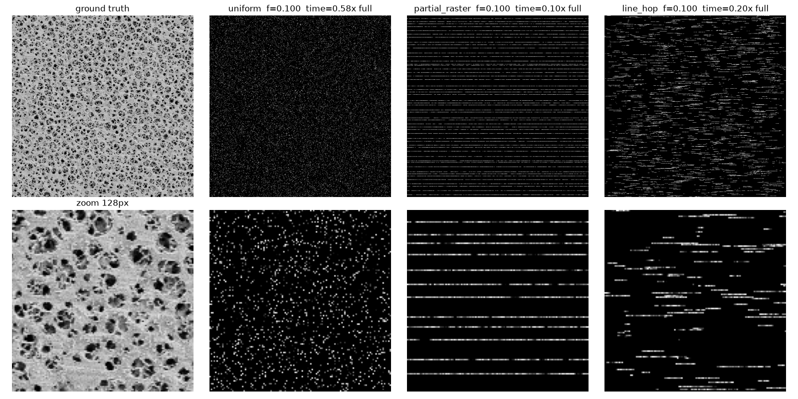
2. Charge for the time the beam really takes
A beam can't teleport. Every jump to a new spot needs the deflection coils to settle, and every new line needs a flyback to the start. The simulation charges 1 µs per measured pixel, 5 µs per jump and 50 µs per line. That changes the picture completely. At 10% of pixels, random scattering costs 0.58× the time of a full scan, because almost every pixel needs a jump. Line-hop costs 0.20×, and partial raster only 0.10×. At 20% random pixels, the time saving is gone entirely.
3. Add realistic noise
Electron counts are random, like raindrops in a bucket: expect 20 and you might get 16 or 25. This "shot noise" is simulated faithfully. Two scenarios are tested:
- Fixed dwell: every measured pixel gets the same exposure, 20 electrons on average for a bright spot. This asks: how much faster can I scan at the same per-pixel quality?
- Fixed total dose: the specimen gets the same total exposure as a quick full scan (2 electrons per pixel), shared among whichever pixels are measured. Measuring fewer pixels means each one gets more electrons and is less noisy. This asks: for a fragile specimen with a fixed damage budget, is it better to measure a few pixels well or many pixels roughly?
4. Fill in the gaps and score the result
Each method reconstructs the full image, and it is scored against the true image. All methods see exactly the same measured pixels and the same noise, so the comparison is fair. The test set is 100 image crops of 512×512 pixels. With 3 patterns × 5 fractions × 2 scenarios, each method produces 3,000 reconstructions.
Reading the scores. The main score is PSNR, in decibels (dB). Higher is better, and it measures how close the reconstruction is to the truth, pixel by pixel. It's a log scale:
- +1 dB means about 21% less error;
- +2 dB means about 37% less;
- +3 dB means half the error.
SSIM, from 0 to 1, measures how well the structure is preserved, such as edges and textures.
The contenders
- Biharmonic
- Draws the smoothest possible surface through the measured pixels. Simple and exact, but it passes the measurement noise straight through.
- TV-L2
- A classic "total variation" method. It looks for an image that agrees with the measurements but has as few sharp changes as possible, which removes noise but also flattens fine texture. Its strength setting was tuned for each condition on separate validation images.
- TV-Poisson
- The same idea, with a noise model that matches electron counting exactly. In principle it should win when counts are low.
- U-Net
- A neural network (7.8M parameters) trained on thousands of SEM images to turn "measured pixels plus a map of where they are" into a full image. One network handles every pattern, fraction and noise level.
- U-Net, uniform-only
- The same network trained only on random-pixel masks. It's a control, to test whether training on the right patterns matters.
- Diffusion
- A generative model (7.9M parameters) of the kind behind modern AI image generators. It starts from pure noise and gradually "develops" an image consistent with the measurements. Run it several times and you get different plausible images; the score here uses the average of 4.
What we found
1. The neural network wins everywhere, and it's the fastest.
Averaged over all sampling fractions with fixed dwell, the U-Net scores about 2 dB above TV-L2, the best traditional method. That's roughly 37% less error. The gap holds on 99% of individual test images and in every one of the 30 conditions. In SSIM, the structure score, the U-Net also leads, at 0.58 against 0.48 for TV-L2.
| Method | Uniform | Partial raster | Line-hop | Time per image |
|---|---|---|---|---|
| Biharmonic | 18.03 | 19.66 | 16.75 | ~12 s (CPU) |
| TV-L2 | 24.05 | 23.53 | 23.21 | ~12 s (CPU) |
| TV-Poisson | 23.70 | 23.25 | 22.90 | ~12 s (CPU) |
| U-Net, uniform-only | 25.90 | 22.79 | 23.53 | 0.03 s (GPU) |
| U-Net | 26.11 | 25.48 | 25.22 | 0.03 s (GPU) |
| Diffusion | 25.79 | 25.08 | 24.83 | 4.8 s (GPU) |
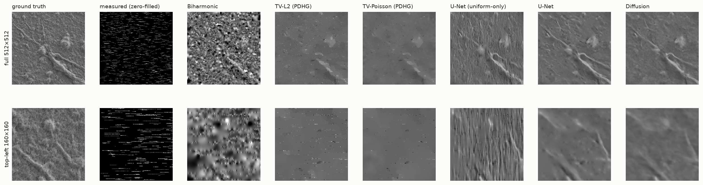
2. For the time spent, scan whole lines.
This is the most practical result. Give each method a time budget and let it pick whichever pattern and fraction does best within it. At every budget up to a full scan's time, the answer is partial raster, for every method except the uniform-only control. With the U-Net, 30% of lines takes 0.30× the time of a full scan and reaches 27.1 dB. Random scattering at just 5% already takes longer (0.34×) and reaches only 24.6 dB.
Past about 0.3× the time, extra scanning buys almost nothing. The only configuration that edges past 30% of lines is random scattering at 30%, and it takes 1.31× as long as scanning every pixel.
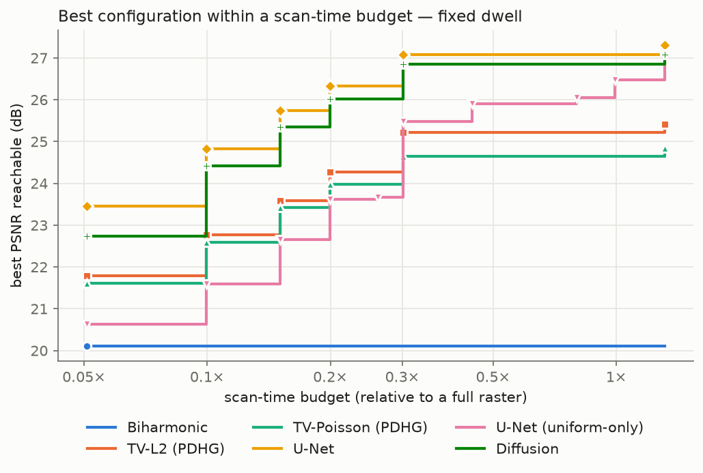
3. The diffusion model is good, but not better on these scores.
Diffusion is a solid second: 1.6 dB ahead of TV-L2, but 0.37–0.41 dB behind the U-Net on 98–99% of images. It's also 160× slower, because it runs its network 100 times per sample, 4 samples per image.
Why doesn't the fancier model win? PSNR rewards the average of all plausible answers, and that's exactly what the U-Net is trained to predict. A diffusion model is built to produce individual, realistic-looking answers, and averaging 4 of them only gets close to the true average. Its other selling points, realistic texture and a map of its own uncertainty, don't show up in PSNR. Finding 9 tests them directly.
One design detail mattered a lot. Forcing the diffusion model to copy the measured pixels exactly made it about 5 dB worse, because those pixels are noisy. Letting the network treat them as hints worked best.
4. Train on the patterns you'll use.
The control network, trained only on random pixels, nearly matches the full U-Net on random pixels (0.2 dB behind). On line-based scans, though, it loses 1.7–3.1 dB, and on partial raster it drops below even the traditional TV-L2. A network only knows the kinds of gaps it was shown.
5. With a fixed damage budget, only noise-aware methods benefit from more pixels.
When the total dose is fixed, measuring more pixels means each one is noisier. The U-Net keeps improving anyway, from 24.3 dB at 5% to 25.8 dB at 30%, because it removes noise as it fills in. Biharmonic, which copies noise exactly, gets steadily worse, from 19.1 to 14.6 dB. For the learned models the gains level off beyond about 15%.
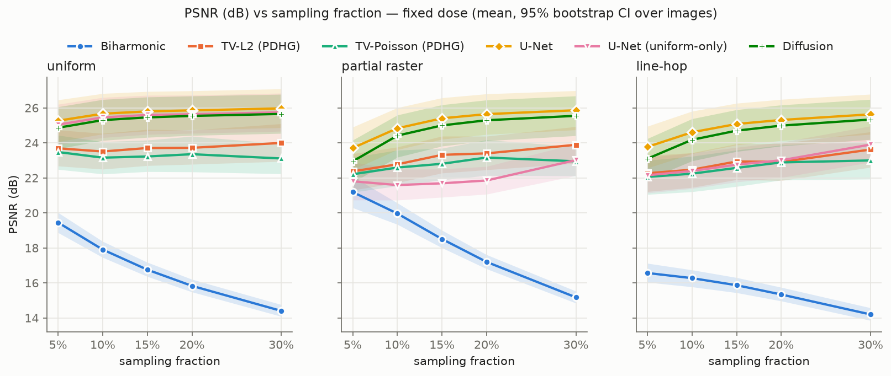
6. The exact noise model didn't help the traditional method.
TV-Poisson, which models electron counting exactly, came out 0.3–0.4 dB behind the simpler TV-L2, even at the lowest counts. We checked this wasn't a tuning mistake by widening its settings range; one case improved, but the conclusion held. Likely reasons: at these counts the simple approximation is already good enough, and the "true" images used for scoring are themselves slightly noisy.
7. Some specimens are much harder than others, but the ranking never changes.
Fine, dense textures such as porous sponges and coated films are hardest, at about 21 dB for the U-Net. Isolated objects on smooth backgrounds, such as probe tips and particles, are easiest, at about 30 dB. In all 10 categories the order is the same: U-Net, then diffusion, then the traditional methods. The U-Net's advantage is largest on fibres (+3.2 dB over TV-L2) and smallest on biological samples (+1.2 dB).
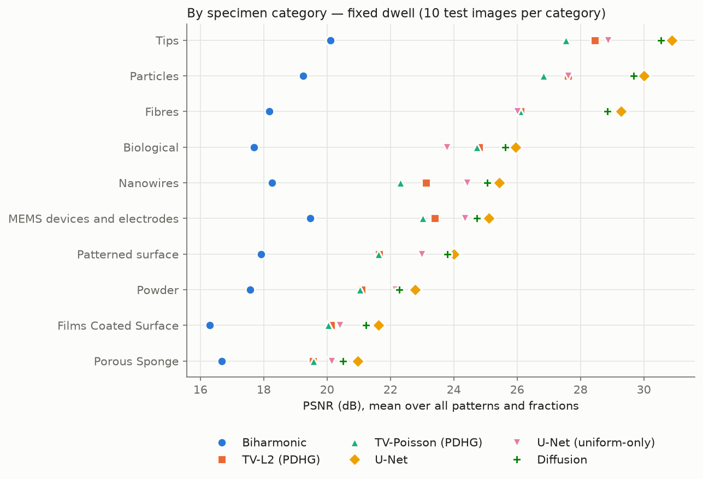
8. When the beam lands a little off target, random-pixel scans suffer and line scans don't.
Real deflection coils overshoot slightly after every jump and take a few pixels to settle. We simulated a landing error of up to 2 pixels that fades over the next few pixels, and re-scored the existing models on 30 test images. No real coil measurements were available, so this is a "what if" test over plausible error sizes, not a calibrated model.
- Random pixels jump before almost every measurement, so almost every pixel is misplaced. At a 2-pixel error the U-Net loses 1.1 dB at 10% of pixels and 2.0 dB at 30%. Random scattering's small edge over partial raster at the same pixel count disappears; at 30% it's gone by a half-pixel error.
- Line-hop only jumps at the start of each short segment, so it loses at most 0.25 dB.
- Partial raster never jumps within a line, so it is unaffected by construction.
A surprise: the neural networks are about 2.5× more sensitive to these errors than TV-L2, probably because they rely on fine detail that misplacement corrupts. Training them on simulated landing errors would be the natural fix; that wasn't tried.
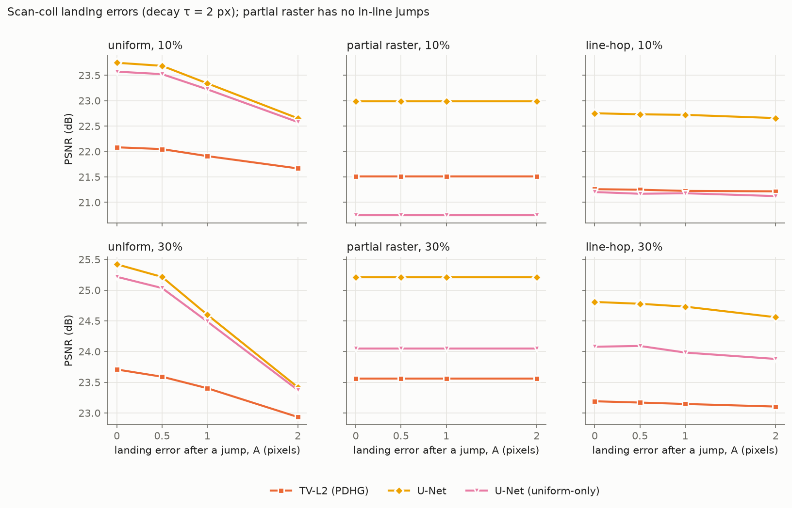
9. What the diffusion model offers beyond the score: a tie with more samples, sharper but less faithful texture, and a rough error map.
We drew 16 samples per case, instead of 4, on 20 test images, and measured three things PSNR can't show.
- More samples close the gap. Averaging 16 samples ties the U-Net: 24.10 against 24.06 dB, a difference well within noise. The price is about 19 seconds per image against 0.03.
- Single samples look sharper, but they aren't more accurate. One sample keeps more fine structure than the U-Net (62% of the true detail against 53%), and averaging washes it out to 38%. But a perceptual similarity score (LPIPS) still rates the U-Net as closer to the real image. The extra texture is plausible, not the specimen's actual texture.
- The uncertainty map helps a little, and it's overconfident. Where the samples disagree, errors do tend to be larger. Discarding the most uncertain pixels removes about 35% of what a perfect error map would. But the spread under-states the real error by about 1.7×, partly because the "true" images carry their own noise, which nothing can predict.
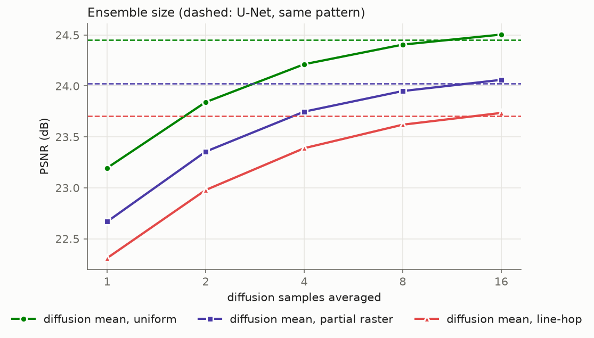
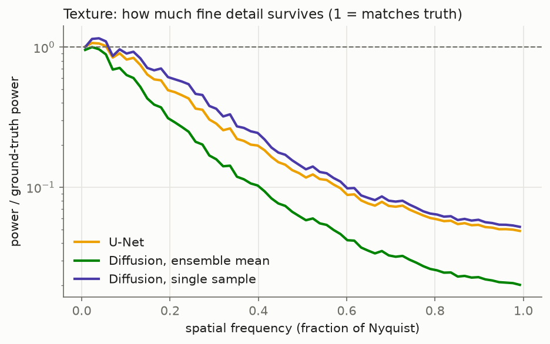
10. On a real microscope, the network's lead depends on the noise.
Everything above is simulated. To check it, we used a public dataset of mouse brain tissue imaged by a Zeiss plasma-FIB SEM at 5 nm per pixel (Chen et al., Zenodo, CC-BY-4.0). The same tissue was scanned at six dwell times, from 0.25 to 2 µs per pixel, and one volume was scanned twice: fast (0.5 µs) and slow (2 µs, used as the reference). Brain tissue looks nothing like the training images, and the models were not retrained.
The real noise is not the simulated kind at short dwell. Neighbouring slices 5 nm apart show nearly the same tissue, so their difference is mostly noise. Between 1 and 2 µs the signal-to-noise ratio grows in step with dwell time, as the simulation assumes. Below 1 µs it collapses much faster. On the twice-scanned volume, 4× the dwell (0.5 to 2 µs) gives 12.9× the signal-to-noise ratio, not 4×. The short-dwell noise is also patterned: neighbouring pixels along a scan line are anti-correlated, where the simulation's noise is independent from pixel to pixel.
Dropping lines from a real scan is a real sparse scan. We kept 10–30% of the lines of the fast 0.5 µs scan and compared each method with a simulated twin: the same case with the real noise swapped for the simulation's noise, at equal strength.
- The U-Net scores 1.1, 1.9 and 2.3 dB below its twin at 10, 20 and 30% of lines, on every one of 20 slices. It also leaves horizontal stripes, likely because it learned to remove the independent-pixel noise it was trained on.
- TV-L2 does 0.3–0.6 dB better on real noise than on its twin, and it beats the U-Net at 20% (+0.5 dB) and 30% of lines (+1.6 dB). The U-Net keeps a 0.2 dB edge only at 10%.
- No sparse option beats simply scanning every line at 0.5 µs and denoising with TV-L2: 20.3 dB against at best 18.3 dB.
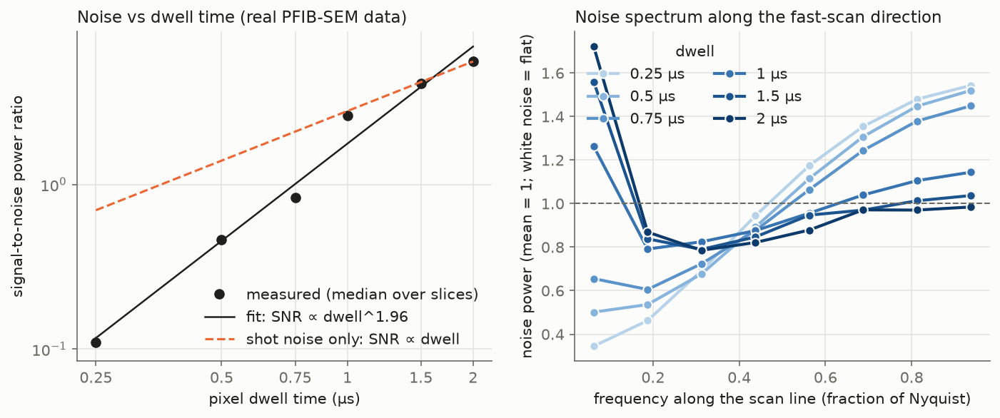
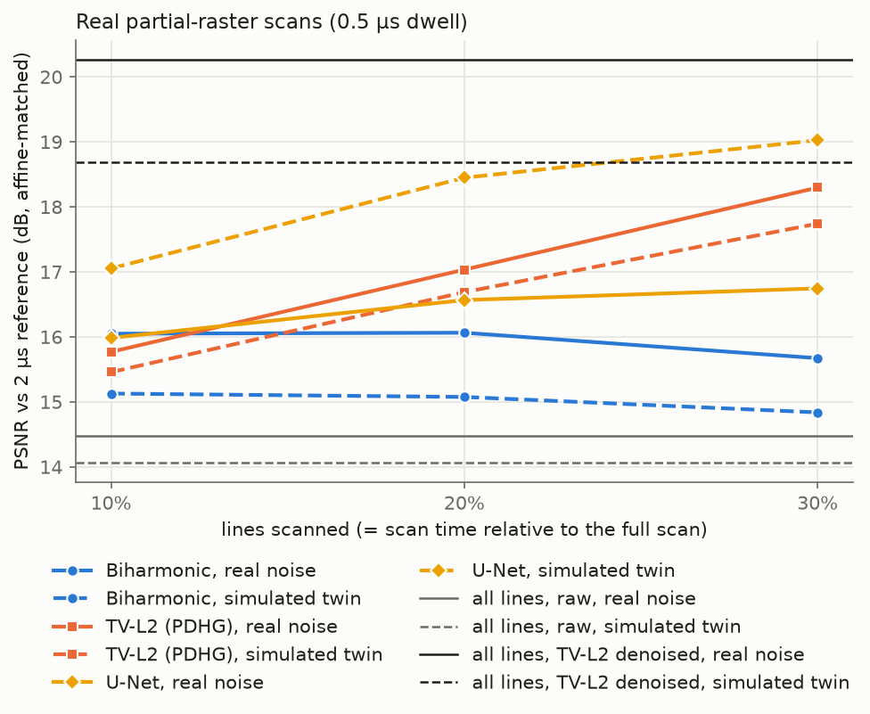
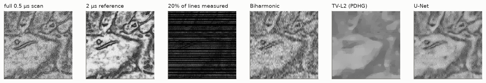
With the same scan time, slower scanning of fewer lines can win, if the network gets the noise it knows. A fixed time buys every line at 0.5 µs, half the lines at 1 µs, or a quarter at 2 µs. At 2 µs the noise is close to the simulated kind, and there the U-Net beats TV-L2 on every slice, by 0.4–0.5 dB.
- In the time of one full fast scan, the U-Net on a quarter of the lines at 2 µs beats the full 0.5 µs scan denoised with TV-L2 by 0.54 dB (95% interval 0.33–0.74), on 18 of 20 slices.
- In half that time, the reverse: half the lines at 0.5 µs with TV-L2 beat the U-Net on an eighth at 2 µs by 0.52 dB.
- In a quarter of the time, the best options tie.
There is no single "scan fast" or "scan slow" rule. What decides it is whether the reconstruction method was built for the noise it gets. This is one specimen and one microscope, so the numbers are a warning, not a law.
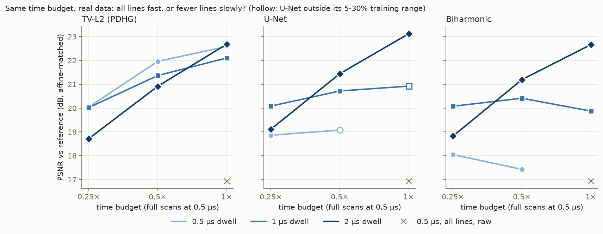
What this means in practice
- For a faster scan, skip whole lines rather than scattered pixels, and use a trained network to fill them in. Scanning 20–30% of lines gave the best results we measured, in a fifth to a third of the time of a full scan.
- For a fragile specimen, spreading a fixed dose over more pixels is fine, even helpful, provided the reconstruction removes noise. Simple interpolation is the wrong tool there.
- If you train a network, train it on the scan patterns your microscope will actually use, and ideally with realistic beam-landing errors.
- Before trusting a network on your microscope, measure your noise. Two scans of the same area (or two neighbouring slices) are enough. If the noise changes with dwell time much faster than electron counting predicts, or is patterned along the scan lines, a network trained on simulated noise can lose to a simple traditional method. Train it on your microscope's noise, or scan slower where the noise is well behaved.
- If your scan coils settle slowly, that is one more reason to avoid random-pixel scanning. Whole-line scans don't jump within a line at all.
Limits of this study
- It's mostly a simulation. Real deflection coils overshoot and wobble after jumps, the stage drifts, and some specimens build up electric charge. Coil landing errors are tested as a "what if" analysis (finding 8); drift and charging are not modelled.
- The real-data check is small. Finding 10 uses one specimen, one microscope and 20 slices. Its slow scans are scored against other slices of the same slow scan, which share its detector settings; that could favour them slightly.
- The "truth" isn't perfect. The reference images are themselves ordinary, slightly noisy, compressed micrographs. Scores measure agreement with them, and the networks partly learn their compression artefacts.
- Accuracy scores aren't everything. PSNR and SSIM favour smooth, averaged answers. A method that produces sharper, more realistic texture can score lower and still look better to a person.
What could come next
None of these has been tried yet. The first matters most.
- Train the network on realistic noise. The simulated twin already points to the answer. On the same brain-tissue slices with the simulation's noise, the U-Net beats TV-L2 by 1.3–1.8 dB. Unfamiliar images alone don't sink it; the real noise does. A network trained with noise matched to the measurements (stronger than electron counting predicts at short dwell, and patterned along the scan lines) should win back much of the 1–2.3 dB it lost and stop leaving stripes. That is a prediction until someone runs it.
- Fine-tune on real scans from this microscope, using the fast and slow scans of the same tissue as input and target. That would show the best a network can do on one instrument, but not whether it carries over to others.
- Train with realistic coil errors, to see whether the networks' extra sensitivity goes away.
- Calibrate the diffusion uncertainty, so its error map can be trusted at face value.
- Test on more microscopes and specimens, especially true sparse acquisitions where the beam really skips pixels, not just whole lines dropped afterwards.
Glossary
- Sampling fraction
- The share of pixels actually measured, 5–30% here.
- Raster scan
- The normal way an SEM scans: line by line, left to right, like reading a page.
- Shot noise
- Randomness in how many electrons arrive, even under steady conditions. More electrons per pixel means relatively less noise.
- Dwell / dose
- How long the beam stays on a pixel, and so how many electrons hit it. Dose is the total exposure the specimen receives.
- PSNR
- Peak signal-to-noise ratio, in dB. A logarithmic score of closeness to the truth; +3 dB means half the error.
- SSIM
- Structural similarity, from 0 to 1. How well edges, contrast and texture are preserved.
- U-Net
- A common neural-network design for image-to-image tasks, shaped like a "U": it shrinks the image to understand context, then expands it back to full detail.
- Diffusion model
- A generative network that creates images by repeatedly removing noise, guided here by the measured pixels.
- Simulated twin
- A copy of a real test case with the real noise replaced by the simulation's noise, to see whether the simulation predicts real performance.
- Ablation
- A control experiment that removes one ingredient, here training on line patterns, to see how much it matters.